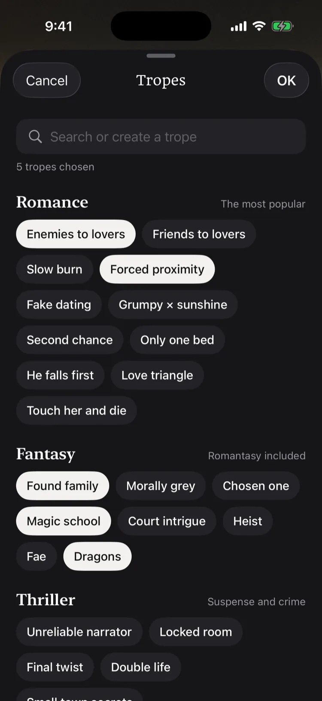
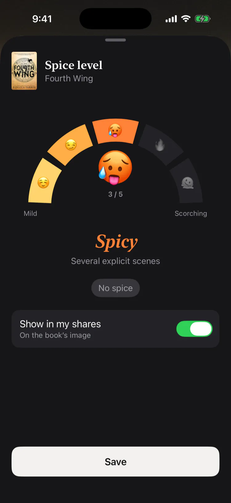
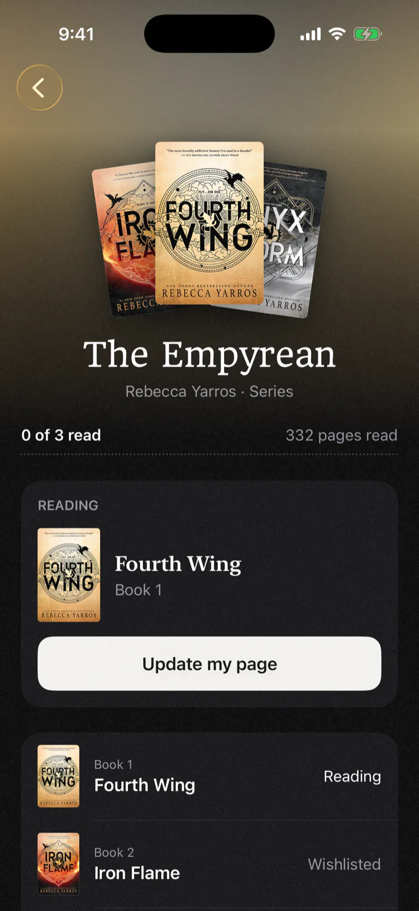
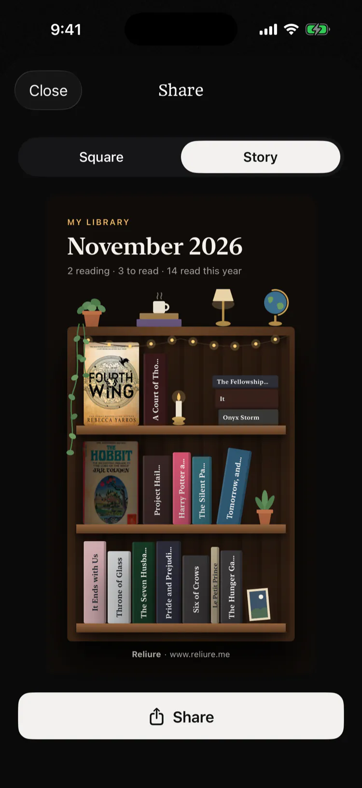
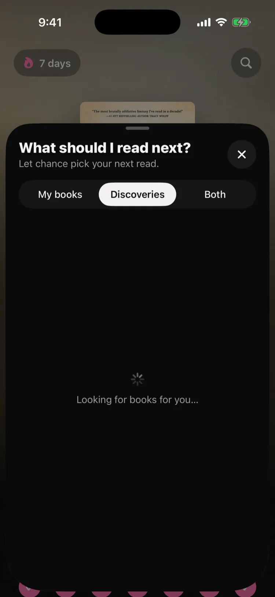
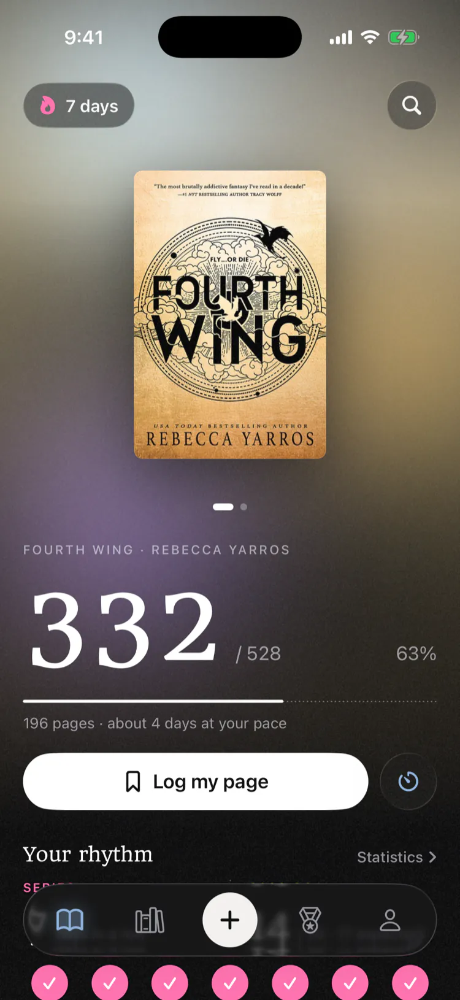

A book tracker that speaks BookTok
Last updated: November 20, 2026
Reliure is a free reading tracker for iPhone that knows what BookTok readers care about: tropes, spice and series. No account, no ads, no subscription.

Tag every book with its tropes
Enemies to lovers, found family, slow burn: give each book its tropes, then find your favourite tropes of the year in your reading statistics.
Rate the spice, from Mild to Scorching
Give each book a spice level from Mild to Scorching, next to your rating, your notes and your favourite quotes.

Keep series together, in order
Books from the same series are grouped together, in reading order, with the next volume to read waiting for you.

Share your shelves and your year
Share your bookcase, a book, a quote, a month or your whole year in reading as an image, square for a post or tall for a story, through Instagram, Messages or any app on your iPhone.

Let the wheel pick your next read
Too many books on your to-read pile? Spin the wheel and let chance choose among your books, or among books from Open Library by the authors you loved and in the genres you read most.

Free and private
Reliure works without an account. Your library stays on your iPhone and in your own iCloud, and you can import your Goodreads library to start.
Download Reliure on the App Store: free, with no account, no ads and no subscription.

Questions
See the frequently asked questions or visit Support.